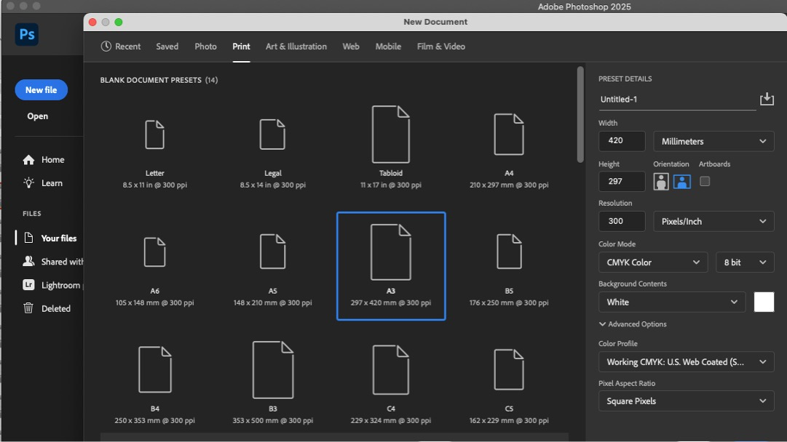
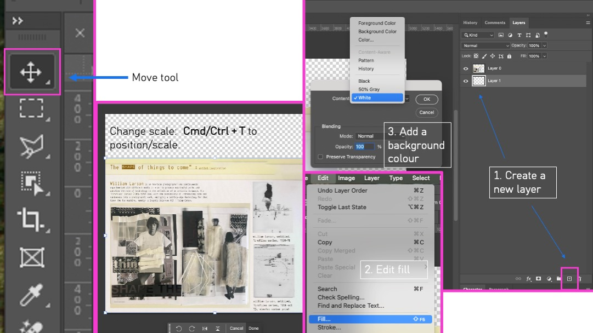
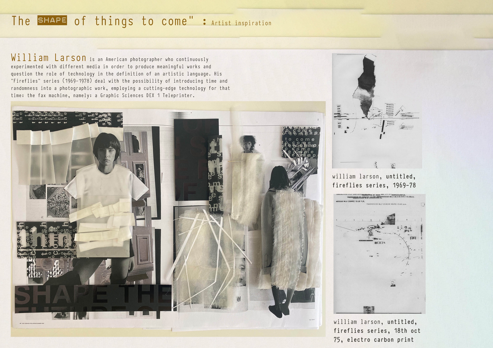

Photoshop Exercise — Content-Aware Fill & Artist Reflection
Purpose: Combine Photoshop practical skills with artist research and reflection. Use Content‑Aware Fill to create experimental imagery from your project work, then add contextual notes with the Type Tool (T).
Recommended format: A3 landscape (420 × 297 mm) | 300 dpi | CMYK
Step 1 — Prepare Document
- File → New → A3 Landscape.
- Resolution 300 dpi, Colour Mode CMYK.

Step 2 — Arrange Your Work
- Import images of design experiments.
- Use Move Tool (V) and Cmd/Ctrl + T to position/scale.
- Add white background layer (Edit → Fill → White).

Step 3 — Content‑Aware Fill
- Select area with Rectangular Marquee (M).
- Edit → Content‑Aware Fill… → adjust preview → OK.


Step 4 — Refine and Blend
- Merge layers and experiment with blending modes and opacity.

Step 5 — Add Text & Artist Research
- Use Type Tool (T) for artist names, quotes and reflections.


Step 6 — Finalise A3 Page
- Check flow and balance → Save as .PSD and .JPG for submission.

Artist Research & Reflection
Select relevant artists examining erasure, surface manipulation, digital collage, or image transformation.
- Gerhard Richter – Blurred abstraction between media.
- Lorna Simpson – Collage & text exploring identity.
- Andreas Gursky – Digitally structured composition.
- Ruth van Beek – Cut‑outs implying movement.
- Sarah Charlesworth – Conceptual image re‑contextualisation.
Reflection prompts — add text directly to your A3 page:
- Which artist connects to your Photoshop experiment?
- How did their approach influence your composition?
- Include a short typed reference (artist + website/book).
Step 7 — Quick Quiz: Photoshop Essentials
1. Which Photoshop tool automatically fills a selected area by analysing surrounding pixels?
2. What shortcut key activates the Type Tool?
3. What file format should be used for saving editable Photoshop files?
4. In preparing your layout, which resolution ensures print quality?